机器学习环境搭建
一般使用anaconda搭建python虚拟环境（miniconda占的空间应该小一点，这个也可以）
使用工具库一般有科学计算库numpy，数据处理库pandas，绘图matplotlib等，需要了解相关用法
……
线性回归 Linear Regression
1 概述
线性回归类似高中的线性规划题目。线性回归要做的是就是找到一个数学公式能相对较完美地把所有自变量组合（加减乘除）起来，得到的结果和目标接近。
线性回归分为一元线性回归和多元线性回归。
2 一元线性回归
2.1 构造回归方程
有n组数据，自变量（特征值） $x(x_1,x_2,…,x_n)$ 与因变量（目标值） $y(y_1,y_2,…,y_n)$ ，我们需要找到一个线性关系，使他们之间尽可能满足： $f(x) =ax+b$ ，这个就是构建的一元线性方程。

线性回归的目标就是让 $f(X)$ 与 $y$ 之间的差距最小，也就是权重$a$和偏置$b$取什么值的时候$f(X)$和$y$最接近。
2.2 构造损失函数
损失函数是来度量模型预测值与真实值不一样的程度的，或者说度量预测错误的程度，损失函数值越小，模型就越好。
在回归问题中，误差平方和是回归任务中最常用的性能度量。这里就可以令损失函数$L(a,b)$等于误差平方和（均方误差）。
则损失函数为: $L(a, b) = \sum \limits_{i = 1}^{n}(f(x_i) - y_i)^2$
2.3 确定参数
我们需要通过最小的损失函数得到最佳的参数 $a$ 和 $b$ 。一般使用最小二乘法。
$$
a = \frac{\sum \limits_{i=1}^{n}x_iy_i - n \overline x \overline y}{\sum \limits_{i=1}^{n}x_i^2 - n \overline x ^ 2}
\\
b = \overline y - a \overline x
$$
3 多元线性回归
多元线性回归类似一元
回归方程： $y = a_1 x_1 + a_2 x_2 + a_3 x_3 + … + a_n x_n + b$
对所有的数据统一用矩阵形式表示：
$$
y^{(i)} = \theta ^ T x ^ {(i)} + \varepsilon^{(i)} \ (1)
$$
$y^{(i)}$表示第
i个样本的真实值$\varepsilon$ 误差代表真实值和预测值之间的差异
误差 $\varepsilon ^{(i)}$ 是独立并具有相同的分布，服从均值为 0 方差为 $\theta ^ 2$ 的高斯分布
损失函数
$$
L(a_1, a_2, …, a_n, b) = \sum_{i = 1}^{n}(f(x_i) - y_i)^2
$$
高斯分布的概率函数：
$$
p(x) = \frac{1}{\sqrt {2 \pi} \sigma} \exp{(-\frac{x^2}{2 \sigma ^ 2})} \ (2)
$$
将(1)带入(2)得到预测值成为真实值的概率函数：
$$
p(y ^ {(i)} | x ^ {(i)}; \theta) = \frac{1}{\sqrt {2 \pi} \sigma} \exp{(-\frac{(y^{(i)} - \theta ^ T x ^ {(i)})^2}{2 \sigma ^ 2})}
$$
似然函数：（什么样的参数计算出来的误差最小，即与实际值最接近）
$$
L(\theta) = \prod \limits_{i = 1}^{m} p(y ^ {(i)} | x ^ {(i)}; \theta) = \prod \limits_{i=1}^{m}\frac{1}{\sqrt {2 \pi} \sigma} \exp{(-\frac{(y^{(i)} - \theta ^ T x ^ {(i)})^2}{2 \sigma ^ 2})}
$$
对数似然法：（将乘法转化为加法），之后需要用极大似然估计方法求解
$$
ln L(\theta) = ln \prod \limits_{i=1}^{m}\frac{1}{\sqrt {2 \pi} \sigma} \exp{(-\frac{(y^{(i)} - \theta ^ T x ^ {(i)})^2}{2 \sigma ^ 2})}
$$
展开化简：
$$
ln L(\theta) = \sum \limits_{i = 1}^{m}ln \frac{1}{\sqrt {2 \pi} \sigma} \exp{(-\frac{(y^{(i)} - \theta ^ T x ^ {(i)})^2}{2 \sigma ^ 2})}
\\
= mln \frac{1}{\sqrt {2 \pi} \sigma} - \frac{1}{\sigma^2} \frac{1}{2} \sum \limits _{i = 1}^{m} (y^{(i)} - \theta ^ T x ^ {(i)})^2
$$
目标：让似然函数越大越好（极大似然估计），即让$J(\theta)$越小越好（可以使用最小二乘法求解）
$$
J(\theta) = \frac{1}{2} \sum \limits _{i = 1}^{m} (y^{(i)} - \theta ^ T x ^ {(i)})^2
$$
其实由损失函数也可以得到同样的式子：
对于$y = \theta x + b$，$\theta$ 将 $b$ 也吸入进入得到 $\hat \theta = (\theta, b)$ ，$X$代表所有的样本数据，最后一个元素置1，最后要和 $\hat\theta$ 相乘，最后求偏导也是一样的结果。
$$
L = \sum \limits_{i = 1}^n ( y_i - f(x_i)) ^ 2 = (y - X \hat\theta)^T(y - X \hat\theta) \\
X =
\begin{pmatrix}
x_{11} & x_{12} & \cdots & x_{1d} & 1 \\
x_{11} & x_{12} & \cdots & x_{1d} & 1 \\
\vdots & \vdots & \ddots & \vdots & \vdots \\
x_{m1} & x_{m2} & \cdots & x_{md} & 1
\end{pmatrix}
=
\begin{pmatrix}
x_1^T & 1 \\
x_2^T & 1 \\
\vdots & \vdots \\
x_m^T & 1
\end{pmatrix}
$$

矩阵求导参考：
4 梯度下降
梯度下降法（gradient descent）是一种常用的一阶（first-order）优化方法。主要解决求最小值问题，其基本思想在于不断地逼近最优点，每一步的优化方向就是梯度的方向。
4.1 梯度下降方法
- 批量梯度下降
容易得到最优解，但是由于每次考虑所有样本，速度很慢。
- 随机梯度下降
每次找一个样本，迭代速度很快，但不一定每次都朝着收敛的方向。
- 小批量梯度下降
每次更新一小部分数据来算，因为在整个训练集上算梯度资源消耗太大，我们可以随机采取$b$个样本$i_1, i_2, \cdots, i_b$来近似损失，$e$是损失函数，$b$是批量大小。
$$
\frac{1}{b} \sum \limits_{i \in I_b} \mathcal{e}(\mathbf{x_i}, y_i, \mathbf{w})
$$
4.2 其他参数
- 学习率：更新的步长

- 批处理数量
一般batch_size选择32，64，128等，有时候会考虑内存和效率。
逻辑回归
逻辑回归是一个经典的二分类算法。
1 sigmoid函数
$$
g(z) = \frac{1}{1 + e ^ {-z}}, z \in R
$$
将任意的输入映射到了$[0, 1]$区间中，在线性回归中可以得到一个预测值，再将该值映射到sigmoid函数中，这样就可以完成由值到概率的转换，这就是分类任务。
2 逻辑回归求解
预测函数：
$$
h_{\theta}(x) = g(\theta ^ T x) = \frac{1}{1 + e ^ {-\theta^T x}} \\
其中 \theta_0 + \theta_1 x_1 + … + \theta_n x_n = \sum \limits_{i = 1}^n \theta_i x_i = \theta ^ T x
$$
分类任务：
$$
\begin{cases}
P(y = 1|x; \theta) = h_\theta(x) \\
P(y = 0|x; \theta) = 1 - h_\theta(x)
\end{cases}
\Rightarrow
P(y | x; \theta) = (h_\theta(x)) ^ y (1 - h_\theta(x)) ^ {1 - y}
$$
对于二分类任务（0， 1），整合后，y取0只保留$(1 - h_\theta(x)) ^ {1 - y}$ ，y取1只保留 $(h_\theta(x)) ^ y$ 。
似然函数：
$$
L(\theta) = \prod \limits_{i = 1}^m P(y_i | x_i; \theta) = \prod \limits_{i = 1}^m (h_\theta(x_i)) ^ y_i (1 - h_\theta(x_i)) ^ {1 - y_i}
$$
对数似然法，即求$l(\theta)$ 的最大值：
$$
l(\theta) = logL(\theta) = \sum \limits_{i = 1} ^m (y_i log h_\theta(x_i) + (1 - y_i) log (1 - h_\theta(x_i)))
$$
将上述函数转化为求最小值，同时系数乘上一个常数，即求$J(\theta) = -\frac{1}{m}l(\theta)$ 的最小值，转化为梯度下降问题：
$$
J(\theta) = -\frac{1}{m}l(\theta)
$$
上述过程即求出了偏导的方向，有了更新方向就可以进行参数更新： $\alpha$代表学习率
$$
\theta_j = \theta_j - \alpha \frac{1}{m} \sum \limits_{i = 1} ^ m (h_\theta(x_i) - y_i)x_i^j
$$
减法是代表用的梯度下降，整体除以
m是考虑了所有的m个样本。
多分类问题：
Softmax回归是逻辑回归的一般化，相关对比参考 https://zhuanlan.zhihu.com/p/98061179
模型评估标准
1 回归模型评估
1.1 平均绝对误差（Mean Absolute Error，MAE）
平均绝对误差就是指预测值与真实值之间平均相差多大
$$
MAE = \frac{1}{m}\sum \limits _{i = 1}^m \lvert f_i - y_i \rvert
$$
1.2 均方误差（Mean Squared Error，MSE）
观测值与真值偏差的平方和与观测次数的比值
$$
MSE = \frac{1}{m} \sum \limits_{i = 1}^m(f_i - y_i)^2
$$
这也是线性回归中最常用的损失函数，线性回归过程中尽量让该损失函数最小。那么模型之间的对比也可以用它来比较。
MSE可以评价数据的变化程度，MSE的值越小，说明预测模型描述实验数据具有更好的精确度。
1.3 R-square（决定系数）
$$
R^2 = 1 - \frac{\sum(Y_{actual} - Y_{predict})^2}{\sum(Y_{actual} - Y_{mean})^2}
$$
1.4 Adjusted R-Square（校正决定系数）
$$
R^2_{adjusted} = 1 - \frac{(1 - R^2)(n - 1)}{n - p - 1}
$$
n为样本数量，p为特征数量
消除了样本数量和特征数量的影响
1.5 交叉验证
我们有一个总的数据集，将总数据集切分，例如，将数据分为训练集（80%）和测试集（20%），训练集用来训练model，测试集用来最终的测试。
训练集还再平均进行切分为3份（标号为1、2、3）。
测试集和训练集的比例自己定。
交叉验证就是在训练集中，采用2份数据来训练，用另一份数据来验证训练出的模型的参数，进行3次。
即：1 + 2来训练，3验证；2 + 3来训练，1来验证；1 + 3来训练，2来验证。
为了让模型的评估效果比较好，最后将3次的参数取平均值。
无论分类还是回归模型，都可以利用交叉验证，进行模型评估
sklearn模块中有交叉验证函数，例如
sklearn.cross_validation中的train_testsplit函数
交叉验证主要是为了防止某一部分数据比较简单，导致模型的效果比较高。
2 分类模型评估
2.1 准确率、精确率、召回率、f1_score
准确率（Accuracy）的定义是：对于给定的测试集，分类模型正确分类的样本数与总样本数之比；
精确率（Precision）的定义是：对于给定测试集的某一个类别，分类模型预测正确的比例，或者说：分类模型预测的正样本中有多少是真正的正样本；
召回率（Recall）的定义为：对于给定测试集的某一个类别，样本中的正类有多少被分类模型预测正确；
假设有1000个人，其中990个人正常，有10个人患有癌症，模型旨在预测哪些人是患有癌症的。
如果模型预测1000个人中都是正常的，没有癌症患者，那么可以说模型的精度是$\frac{990}{1000}=0.99$。虽然精度很高，但是都是正样本，没有负样本，模型是无用的，因为一个患者都没有找到。因此无法用精度来评估模型，而是使用recall召回率来评估。
F1_score，在理想情况下，我们希望模型的精确率越高越好，同时召回率也越高越高，但是，现实情况往往事与愿违，在现实情况下，精确率和召回率像是坐在跷跷板上一样，往往出现一个值升高，另一个值降低，那么，有没有一个指标来综合考虑精确率和召回率了，这个指标就是F值。F值的计算公式为：
$$
F = \frac{(a ^ 2 + 1) \times P \times R}{a ^ 2 \times (P + R)}
$$P: Precision， R: Recall, a：权重因子
当a=1时，F值便是F1值，代表精确率和召回率的权重是一样的，是最常用的一种评价指标。
F1的计算公式为：$F1 = \frac{2 \times P \times R}{P + R}$
2.2 混淆矩阵
混淆矩阵也称误差矩阵，是表示精度评价的一种标准格式，用n行n列的矩阵形式来表示。
具体评价指标有总体精度、制图精度、用户精度等，这些精度指标从不同的侧面反映了图像分类的精度。
下面是一个混淆矩阵，Actual代表真实值，Predicted代表预测值，预测的是标签号（因为是分类任务，主要对标签进行分类）。
下面是我对TP、TN、FP、FN四个值的理解（助记）
TP：预测正确，预测成1
TN：预测正确，预测成0
FP：预测错误，预测成1
FN：预测错误，预测成0

可以通过上面四个值计算相应的评估值，见下图。
- 准确率：预测正确的比例
- 精确率：在预测之后，在预测结果的某一结果上，正确的比例
- 召回率：在预测之前，真实值为某一结果上，正确的比例
回归模型相关技巧
1 下采样和上采样
在分类问题的数据中，很容易出现正反数据集数量存在极大的差距，这类数据直接用于训练不利于模型的构架，所以我们需要对数据进行些许处理。
很容易想到，合理的数据集应该是正反数据集数量应接近，那就存在两种策略：
下采样策略：把数量多的减少到与数量少的相近
上（过）采样策略：把数量少的增加到与数量多的相近
- 下采样：

- 上采样：SMOTE算法
步骤：
（1）对于少数类中每一个样本x，以欧氏距离（两点之间距离）为标准计算它到少数类样本集中所有样本的距离，得到其k近邻（所有距离排序后前k小的距离）
（2）根据样本不平衡比例设置一个采样比例以确定采样倍率N，对于每一个少数类样本x，从其k近邻中随机选择若干个样本，假设选择的近邻为xn
（3）对于每一个随机选出的近邻xn，分别与原样本按照如下的公式构建新的样本。
$$
x_{new} = x + rand(0, 1) \times (\widetilde x - x)
$$
$(\widetilde x - x)$ 相当于距离 $d_i$ （欧几里得距离），那么每个 $d_i$ 都可以生成一个新的数据。

2 正则化惩罚
加上了正则化项能在一定程度上避免过拟合
决策树
1 概述
1.1 定义
决策树是一种解决分类问题的算法，决策树算法采用树形结构，使用层层推理来实现最终的分类。
决策树即可以做分类，也可以做回归。它主要分为两种：分类树 和 回归树。
1.2 决策树算法
- 第一个决策树算法: CLS （Concept Learning System）
- 使决策树受到关注、成为机器学习主流技术的算法: ID3
- 最常用的决策树算法: C4.5
- 可以用于回归任务的决策树算法: CART （Classification and Regression Tree）
- 基于决策树的最强大算法: RF （Random Forest）
1.3 结构
决策树由下面几种元素构成：
- 根节点：包含样本的全集（全部训练数据）
- 内部节点：对应特征属性测试
- 叶节点：代表决策的结果
决策树学习的目的是为了产生一棵泛化能力强的决策树
2 决策树构建
2.1 构建过程
整体策略：自上而下分而治之
决策树的构建过程就是一个自根至叶的递归过程， 在每个中间结点寻找一个划分属性。
大致过程：
- 开始：构建根节点，所有训练数据都放在根节点，选择x个最优特征，按着这一特征将训练数据集分割成子集，进入子节点。
- 所有子集按内部节点的属性递归地进行分割。
- 如果这些子集已经能够被基本正确分类，那么构建叶节点，并将这些子集分到所对应的叶节点去。
- 每个子集都被分到叶节点上，即都有了明确的类，这样就生成了一颗决策树。
递归的三种停止条件：
- 当前结点包含的样本全属于同一类别，无需划分；
- 当前属性集为空，或是所有样本在所有属性上取值相同，无法划分;
- 当前结点包含的样本集合为空，不能划分。
2.2 特征选择
信息熵：随机变量的不确定性。
$$
H(X) = - \sum p_i log_2 p_i \hspace{2em} \text{i = 1, 2, …, n}
$$
例：
A集合 $[1, 1, 1, 1, 1, 1, 1, 1, 2, 2]$
B集合$[1, 2, 3, 4, 5, 6, 7, 8, 9, 1]$
A集合熵值低于B集合熵值，因为A集合中只有两种类别，B集合中类别比较多（结构比较乱），熵值就会比较大
信息增益： 表示特征X使得类Y的不确定性减少的程度（熵值减少），即当前划分对信息熵所造成的变化。
信息增益越大，表示特征a来划分所减少的熵最大，即提升最大，应当作为根节点。
3 决策树算法
3.1 ID3（信息增益）
下面是基于信息增益的ID3算法的实例：
我们有14天的数据，4个特征条件：天气，温度，湿度，是否有风。最终结果是去玩不玩。
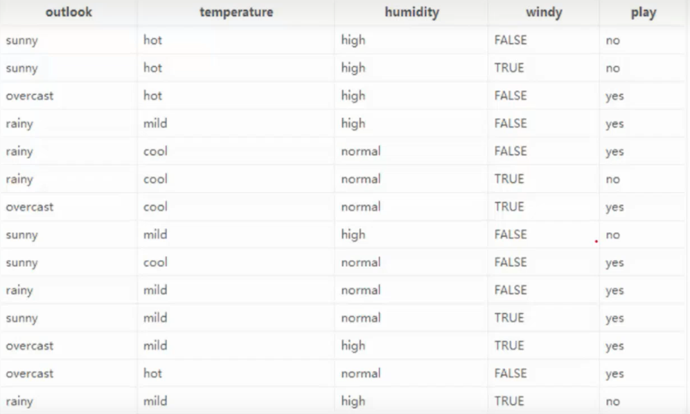

上面有四种划分方式，我们需要判断谁来当根节点，根据的主要就是信息增益这个指标。下面计算信息增益来判断根节点。
本例暂且以ent(a, b)代表以下含义：（只有两种结果的时候的熵值计算）
from math import log2
def ent(a, b):
tot = a + b
x, y = a / tot, b / tot
return -(x * log2(x) + y * log2(y))总的数据中，9天玩，5天不玩，熵值为：
$$
-\frac{9}{14}log_2 \frac{9}{14} - \frac{5}{14}log_2 \frac{5}{14} = 0.940
$$
然后对4个特征逐个分析：
outlook
outlook = sunny时，熵值为0.971，取值为sunny的概率为 $\frac{5}{14}$outlook = overcast时，熵值为0，取值为overcast的概率为 $\frac{4}{14}$outlook = rainy时，熵值为0.971，取值为rainy的概率为 $\frac{5}{14}$
熵值为：
$$
\frac{5}{14} \times 0.971 + \frac{4}{14} \times 0 + \frac{5}{14} \times 0.971 = 0.693
$$
信息增益：系统熵值从0.940下降到0.693，增益为0.247。temperture
temperture = hot时，熵值为1.0（ent(2, 2)），取值为hot的概率为$\frac{4}{14}$temperture = mild时，熵值为0.918（ent(4, 2)），取值为mild的概率为$\frac{6}{14}$temperture = cool时，熵值为0.81（ent(3,1)），取值为cool的概率为$\frac{4}{14}$
熵值为：
$$
\frac{4}{14} \times 1.0 + \frac{6}{14} \times 0.918 + \frac{4}{14} \times 0.81 = 0.911
$$
信息增益：$Gain(S, temperture) = 0.940 - 0.911 = 0.029$其他特征按照相同方法来做得到：
$$
Gain(S，Outlook)=0.247 \
Gain(S, Humidity)=0.151 \
Gain(S, Wind)=0 .048 \
Gain(S,Temperature)=0 .029
$$
计算出所有的信息增益之后，选择有最大的信息增益的特征作为根节点。
下面找Sunny分支的决策树划分：
总的熵值
$$
-\frac{2}{5} \times log_2(\frac{2}{5}) - \frac{3}{5}log_2(\frac{3}{5}) = 0.97
$$
以剩下的三个特征进行分析：
temperture
- temperture=hot，熵值为0，概率为$\frac{2}{5}$
- temperture=mild，熵值为1.0，概率为$\frac{2}{5}$
- temperture=cool，熵值为0，概率为$\frac{1}{5}$
熵值为$\frac{2}{5}$
信息增益：$0.97-0.4 = 0.57$
humidy
- high，熵值为0，概率为$\frac{3}{5}$
- normal，熵值为1，概率为$\frac{2}{5}$
熵值为$\frac{2}{5}$
信息增益：$0.97 - 0.4 = 0.57$
windy
- false，熵值为0.918，概率为$\frac{3}{5}$
- true，熵值为1，概率为$\frac{2}{5}$
熵值为$0.951$
信息增益：$0.97 - 0.95 = 0.02$
故选择humidy或wind划分
剩下的划分同理，最终决策树为

3.2 C4.5（信息增益率）
基于信息增益的决策树算法会有哪些问题：
如果有一个特征：id，代表样本的编号，以上述数据为例，id为从1到14，如果计算id特征的根节点，发现信息增益是最大的，因为每一个子节点的信息熵值都为0。
信息增益率：（解决了ID3的问题，考虑自身熵，信息增益除以自身熵）
$$
\frac{G}{H(x)} \hspace{2em} \text{G:信息增益, H(x):熵值}
$$
3.3 CART（GINI系数）
使用基尼系数作为衡量标准。
$$
Gini(p) = \sum \limits _{k = 1}^K p_k (1 - p_k) = 1 - \sum \limits _{k = 1}^K p_k^2
$$
3 决策树剪枝
3.1 预剪枝
在建立决策树边的时候进行剪枝的操作，比较使用实用。
剪枝策略：
- 限制深度
- 限制叶子结点个数
- 限制叶子结点样本数
- 限制信息增益量等。
3.2 后剪枝
建立完决策树后进行剪枝操作。
4 连续值和缺失值处理
连续值属性可取数值不是有限的，不能根据连续树形的可取值对节点进行划分。常见做法是：二分法对其进行离散化。
现实应用中，经常会遇到属性值
缺失现象仅使用无缺失的样例，这是对数据的极大浪费使用带缺失值的样例，需解决：- 如何进行划分属性选择?
- 给定划分属性，若样本在该属性上的值缺失，如何进行划分?
基本思路：样本赋权，权重划分
集成算法
1 概述
集成算法：Ensemble Learning
Bagging：训练多个分类器取平均
$$
f(x) = \frac{1}{M} \sum \limits_{m = 1}^M f_m(x)
$$
Boosting：从弱学习器开始加强，通过加权来训练。
$$
F_m(x) = F_{m - 1}(x) + argmin_h \sum \limits_{i = 1}^n L(y_i, F_{m - 1}(x_i) + h(x_i))
$$
Stacking：聚合多个分类或回归模型。
2 Bagging模型-随机森林
其实就是并行训练一堆分类器（每个分类器互相独立）。典型代表为随机森林（多个决策树并行放在一起）。
随机指的是：数据随机采样，特征随机选择
每个分类器喂的数据随机，数据的特征数随机。二重随机性，会让每个树基本都不一样，最终的结果也不一样。
随机森林优势：
- 可以处理高维度（feature多）数据，不用做特征选择
- 训练完之后，可以给出那些feature比较重要
- 容易做成并行化方法，速度快
- 可以进行可视化展示，便于分析
3 Boosting模型
提升模型典型代表：AdaBoost，XgBoost
AdaBoost：会根据前一次的分类效果调整数据权重
4 Stacking模型
堆叠模型：可以堆叠各种各样的分类器（KNN，SVM，RF等）
分阶段进行：第一阶段得出各自的结果，第二阶段再利用前一阶段结果进行训练。
贝叶斯算法
贝叶斯公式：
$$
P(A | B) = \frac{P(B|A)P(A)}{P(B)}
$$
1.1 实例：拼写纠正
用户输入一个不在词典中的单词，需要猜测用户真正想输入的单词。
我们要求的是P(我们猜测用户想输入的单词|用户实际输入的单词)
假设用户实际输入的单词为D（Data）
我们有多个猜测：P(h1 | D), P(h2 | D)， 方便后续计算，统一为P(h | D)
$$
P(h | D) = \frac{P(h) P(D | h)}{P(D)}
$$
$P(h)$为单词在语料库中出现的概率（出现次数 / 总次数），我们叫做先验概率，这个概率可以算出来。
$P(D|h)$ 为我们将一个正确的词输入错误的概率。
对于所有的猜测，$P(D)$ 都是一样的，所以可以忽略这个常数。
则
$$
P(h|D) \varpropto P(h)P(D|h)
$$
$P(D|h)$可以根据某种指标来判定，可以看键盘上字母的编辑距离来算概率等等。
如果计算出来多个结果预测概率是一样的，那么就可以使用先验概率来进行判断谁最优先。
1.2 拼写检查器实现
原理：
$$
argmaxc \ P(A|B) = argmaxc \ \frac{P(B|A) P(A)}{P(B)}
$$
$P(A|B)$：待求值，用户本想输入B的前提下，错输成A的概率
$P(A)$：文章中出现正确单词A的概率
$P(B|A)$：用户本想输入A的前提下，错输成B的概率
$P(B)$：文章中出现正确单词B的概率
$argmaxc$：用来枚举所有可能的A，并选取概率最大的那个
拼写检查器就是，输入一个单词，先判断这个单词是否存在于语料库中（是否正确），如果不在（可能语料库中没有，或者拼写错误），则需要根据编辑距离进行检查修正。
big.txt文件：https://wwwi.lanzouo.com/i9s8t0ju5qzg
import re, collections
# 将所有大写字母转化为小写，并且去掉特殊字符
def words(text): return re.findall('[a-z]+', text.lower())
def train(features):
# 遇到从来没有见过的新词但语料库中未包含，概率模型中希望返回一个很小的概率，故出现次数设置为1
model = collections.defaultdict(lambda: 1)
for f in features:
model[f] += 1
return model
NWORDS = train(words(open('big.txt').read())) # 词频
alphabet = 'abcdefghijklmnopqrstuvwxyz'
# 编辑距离为1的单词
def edits1(word):
n = len(word)
return set([word[0: i] + word[i + 1:] for i in range(n)] + # deletion
[word[0: i] + word[i + 1] + word[i] + word[i + 2:] for i in range(n - 1)] + # transportation
[word[0: i] + c + word[i + 1: ] for i in range(n) for c in alphabet] + # alteration
[word[0: i] + c + word[i: ] for i in range(n + 1) for c in alphabet]) # insertion
# 编辑距离为2 的单词
def edits2(word):
return set(e2 for e1 in edits1(word) for e2 in edits1(e1))
# 将那些正确的词作为候选词
def known(words):
return set(w for w in words if w in NWORDS)
# 检查器函数，先判断是不是正确的拼写形式，如果不是则选出编辑距离为1的单词……
def correct(word):
candidates = known([word]) or known(edits1(word)) or known(edits2(word)) or [word]
return max(candidates, key=lambda w: NWORDS[w])
print(correct('mach'))1.3 新闻分类
之后用到了再补，短时间不会写。
SVM支持向量机
1 概述
Support Vector Machine是一种二分类模型，它的基本模型是定义在特征空间上的间隔最大的线性分类器
SVM学习的基本想法是求解能够正确划分训练数据集并且几何间隔最大的分离超平面。如下图所示， $wx+b=0$ 即为分离超平面，对于线性可分的数据集来说，这样的超平面有无穷多个（即感知机），但是几何间隔最大的分离超平面却是唯一的。
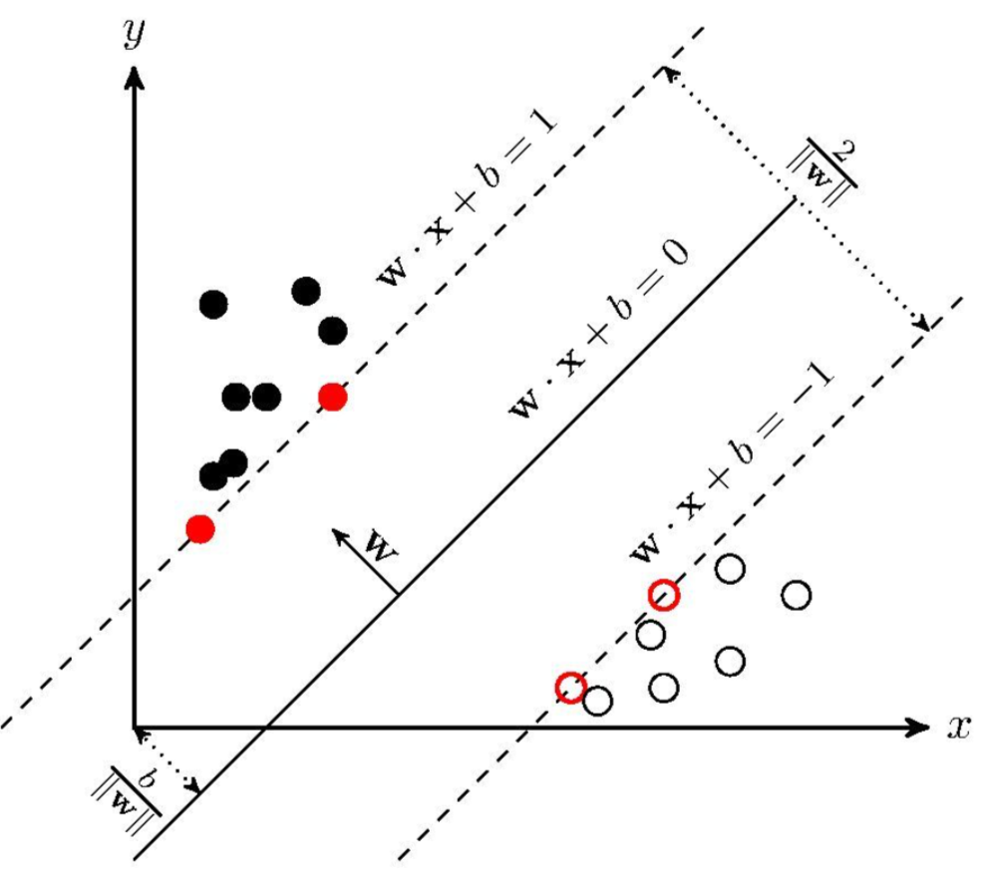
2 推导
2.1 距离
正常三维条件下点$(x_0, y_0, z_0)$到平面$Ax + By + Cz + D = 0$的距离公式（高中知识）：
$$
\frac{\vert Ax_0 + By_0 + Cz_0 + D \vert}{\sqrt{A^2 + B^2 + C^2}}
$$
推导分析过程：
平面方程： $ax + by + cz = d$ ，平面外一点$P(x_0, y_0, z_0)$
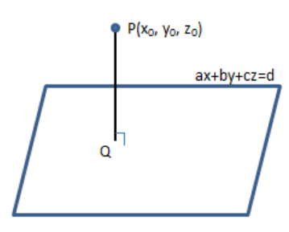
PQ垂直平面，即为求PQ的长度，但不知Q点的具体数据。
故构造一个平面上的点$P^{‘}(x_1, y_1, z_1)$，问题即转化为求$\overrightarrow {P^{‘}P}$ 在法向量N上面的分量，即$\overrightarrow {P^{‘}P}$ 与N相同方向的单位向量的点积。
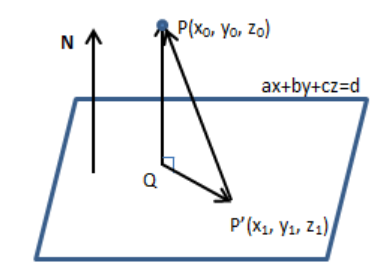
设距离为D。
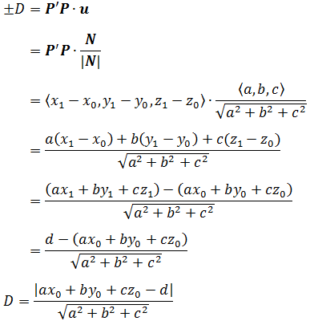
现在考虑一般情况：
求平面外一点 $x$ 到平面$w^T x + b = 0$ 的距离：
结论：平面$Ax + By + Cz + D = 0$的法向量为$(A, B, C)$
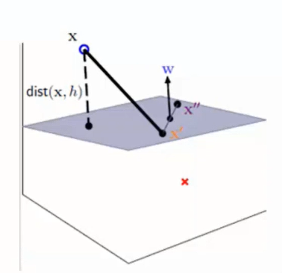
同上述原理：
距离就为
$$
distance(x, b, w) = \vert \frac{w^T}{\vert \vert w \vert \vert}(x - x^{‘}) \vert = \frac{1}{\vert \vert w \vert \vert} \vert w^Tx + b \vert
$$
上述公式进行了代入，将$x^{‘}$代入平面方程得$w^Tx^{‘} = -b$
2.2 数据
数据集：$(x_1, y_1)(x_2, y_2)…(x_n, y_n)$
$Y$ 为样本的类别：当$X$ 为正例时，$Y = +1$，当$X$为负例时，$Y = -1$
决策方程：$y(x) = w^T \Phi(x) + b$ （其中$\Phi(x)$是对数据做了核变换，可以暂时理解为$x$）
$$
\begin{cases}
y(x_i) > 0 \Leftrightarrow y_i = +1 \\
y(x_i) < 0 \Leftrightarrow y_i = -1
\end{cases}
\Longrightarrow
y_i y(x_i) > 0
$$
2.3 目标函数求解
我们要求的就是找到一个线性划分（比如说直线），使得离该线最近的点最远。
将点到直线距离进行转化（化简）：
$$
\frac{y_i \cdot (w^T \cdot \Phi(x) + b)}{\vert \vert w \vert \vert}
$$
$y_i y(x_i) > 0$ 直接乘上$y_i$ 将绝对值去掉，$|y_i| = 1$，并不影响值大小
放缩变换：对于决策方程（w, b）可以通过放缩变换使其结果值$|Y| \geq 1$ ，则
$$
y_i \cdot (w^T \cdot \Phi(x_i) + b) \geq 1
$$
缩放之前w和b有无数组解，缩放之后w和b只有一组解。
优化目标：
$$
\mathop{arg\ max} \limits_{w, b} \bigg\{ \frac{1}{||w||} \mathop{min} \limits_i \Big \{ y_i \cdot (w^T \cdot \Phi(x_i) + b)\Big \} \bigg\}
$$
$\mathop{min} \limits_i \Big \{ y_i \cdot (w^T \cdot \Phi(x_i) + b) \Big \}$ 是求所有样本点到平面的最小距离的那个点
$\mathop{argmax} \limits_{w,b}$ 是最大化到平面最小距离的点的距离，此时的w,b的值
由于$y_i \cdot (w^T \cdot \Phi(x_i) + b) \geq 1$， 故最小值为1，只需要考虑 $\mathop{arg\ max} \limits_{w, b} \frac{1}{||w||}$
当前目标变为：$\mathop{max} \limits_{w, b} \frac{1}{||w||}$，即求$||w||$的最小值，但有约束条件 $y_i \cdot (w^T \cdot \Phi(x_i) + b) \geq 1$
将求极大值转化为求极小值的问题，求$\frac{1}{2}||w||^2$ 的最小值。
需要使用拉格朗日乘子法：（此处不做证明，直接给出结论）
$$
L(w, b, \alpha) = \frac{1}{2}||w||^2 - \sum \limits_{i = 1}^n \alpha_i (y_i \cdot (w^T \cdot \Phi(x_i) + b) - 1)
$$
上式需要满足约束条件：$y_i \cdot (w^T \cdot \Phi(x_i) + b) \geq 1$
满足KKT条件的点未必是局部（全局）最优点（还可能是局部极大和鞍点），但局部（全局）最优点必然满足KKT条件。对于凸优化问题，满足KKT条件的解直接就是全局最优解
$$
最优解的必要条件:
\begin{cases}
\nabla L(\mathbf{x}, \lambda) = \nabla f(\mathbf{x}) + \lambda \nabla g(\mathbf{x}) = 0 \\
\lambda \ge 0 \\
\lambda g(\mathbf{x}) = 0 (互补松弛)\\
g(\mathbf{x}) \le 0 (原约束)
\end{cases}
$$推导可参考：https://blog.csdn.net/v_july_v/article/details/7624837
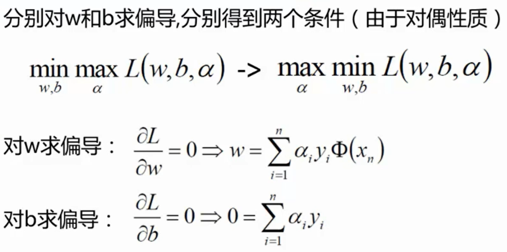
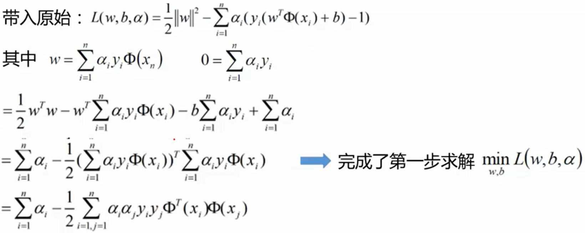
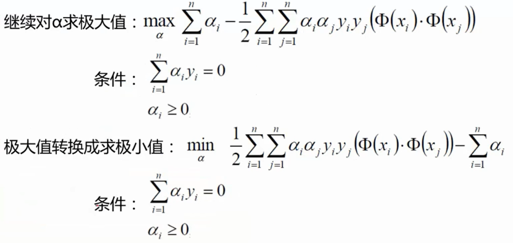
3 SVM实例
有三个数据：3个点，正例$x_1(3, 3), x_2(4, 3)$， 负例$x_3(1, 1)$，（数据是二维数据）对其进行二分类。
首先需要求解下式的最小值：
$$
\frac{1}{2}\sum \limits_{i = 1}^n \sum \limits _{j = 1}^n \alpha_i \alpha_j y_i y_j (x_i \cdot x_j) - \sum \limits_{i = 1}^n\alpha_i \hspace{3em} (1)
$$
注意：$x_i \cdot x_j$ 的运算是点积运算。
约束条件：
$$
\alpha_1 + \alpha_2 - \alpha_3 = 0 \\
\alpha_i \geq 0, \hspace{2em} i = 1, 2, 3
$$
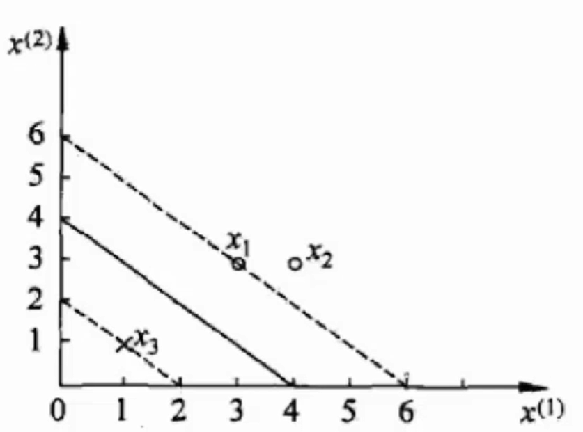
将对应的数据带入（1）式，得：
$$
\frac{1}{2} \Big( 18 \alpha_1^2 + 25\alpha_2^2 + 2 \alpha_3^2 + 42\alpha_1\alpha_2 - 12\alpha_1\alpha_3 - 14\alpha_2\alpha_3 \Big) - \alpha_1 - \alpha_2 - \alpha_3
$$
由于$\alpha_1 + \alpha_2 = \alpha_3$，化简得：
$$
4 \alpha_1 ^ 2 + \frac{13}{2} \alpha_2^2 + 10\alpha_1\alpha_2 - 2\alpha_1 - 2\alpha_2
$$
分别对$\alpha_1,\alpha_2$求偏导，偏导等于0得
$$
\begin{cases}
\alpha_1 = 1.5 \\
\alpha_2 = -1
\end{cases}
$$
发现不满足约束条件$\alpha_i \geq 0$，故解应在边界上。分别让两个值等于0求解
$$
\begin{cases}
\alpha_1 = 0 \\
\alpha_2 = -\frac{2}{13}
\end{cases}
(\times)
\hspace{4em}
\begin{cases}
\alpha_1 = 0.25 \\
\alpha_2 = 0
\end{cases}
(\checkmark)
$$
第一组解不满足，故最小值在$(0.25, 0, 0.25)$处取得。
将$\alpha$结果带求解$w = \sum \limits_{i = 1}^n \alpha_i y_i \Phi(x_i)$，$\Phi(x_i)$以$x_i$来代替
$$
w = \frac{1}{4} \times 1 \times (3,3) + \frac{1}{4} \times (-1) \times(1,1) = (\frac{1}{2}, \frac{1}{2})
\\
b = y_i - \sum \limits_{i = 1}^n a_i y_i (x_i x_j) = 1 - (\frac{1}{4} \times 1 \times 18 + \frac{1}{4} \times (-1) \times 6) = -2
$$
故平面方程为：
$$
0.5 x_1 + 0.5 x_2 - 2 = 0
$$
因为$w = \sum \limits_{i = 1}^n \alpha_i y_i \Phi(x_i)$
支持向量的$\alpha$值不等于0，$\alpha = 0$的向量不是支持向量，对最终结果没有影响。
支持向量就是那些对最终结果起作用的向量，也可以当做是边界上的向量。
4 软间隔
数据中有时候会有一些噪音点，如果考虑它们结果可能不会很好。
之前讨论的是要求所有样本点全部满足约束（这是硬间隔），而实际情况中这显然是不太可能的，软间隔则是允许某些样本点不满足约束。
为解决该问题，引入松弛因子：$y_i(w \cdot x_i + b) \geq 1 - \xi_i$
新的目标函数：
$$
\mathop{min}\limits_{w, b, \xi_i} \frac{1}{2} ||w||^2 + C \sum \limits _{i = 1}^n \xi_i
$$
C是我们需要指定的一个参数
当C趋近于很大时：意味着分类严格不能有错误
当C趋近于很小时：意味着可以由更大的错误容忍
解法基本一样：
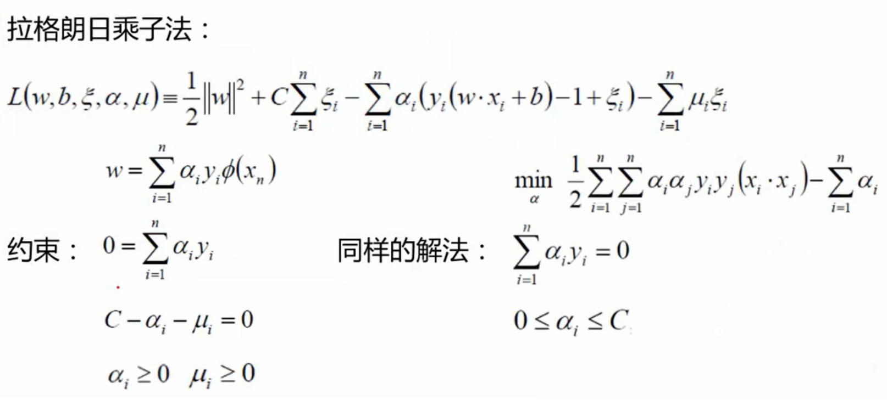
5 SVM核变换
将低维不可分映射到高维，找到一种变换方法，即为$\phi(x)$
高斯核函数：
$$
K(X, Y) = exp \bigg\{ -\frac{||X-Y||^2}{2\sigma^2} \bigg\}
$$
6 基于sklearn求解SVM
参考 https://blog.csdn.net/weixin_42600072/article/details/88644229
聚类算法
性能度量：
- 外部指标
jaccard系数（简称JC）FM指数（简称FMI）Rand指数（简称RI）
- 内部指标
DB指数（简称DBI）Dunn指数（简称DI）
距离计算：
- $L_p$ 范数
- 欧氏距离
- 曼哈顿距离
分类：
- 原型聚类：
k-means算法，学习向量量化（有监督学习），高斯混合聚类 都是此类型算法
假设聚类结构能够通过一组原型刻画，然后对原型进行迭代更新求解。
密度聚类：DBSCAN
层次聚类：AGNES
试图在不同层次上对数据集进行划分，分为自底向上的聚合策略和自顶向下的分拆策略
聚簇之间的距离的计算：最小距离，最大距离和平均距离（两个簇中样本点对距离之和取平均）
AGNES算法被相应称为：单链接算法（以最小距离为准），全链接算法（以最大距离为准）和均链接算法
以单链接算法为例：
- 初始时每个样本点看做一个簇，找到所有簇对中最小的距离，将他们合并为一个簇，此时合并的簇与其他簇的距离更新为两个点到其他簇距离的最小值。
- 上面的步骤为循环里面的步骤，接着进行下一次循环，找到所有簇中最短的距离，然后将他们合并，合并后更新簇之间的距离为【合并簇中的所有点到其他簇距离的最小值】，一直进行上述循环操作，直到达到指定簇的数量再停止循环。
K-MEANS算法
1 概述
聚类概念：这是个无监督问题（没有标签数据），目的是将相似的东西分到一组。
通常使用的算法是K-MEANS算法
K-MEANS算法：
- 需要指定簇的个数，即K值
- 质心：数据的均值，即向量各维取平均即可
- 距离的度量：常用欧几里得距离和余弦相似度（先标准化，让数据基本都是在一个比较小的范围内浮动）
- 优化目标：$min\sum \limits_{i = 1}^K \sum \limits_{x \in C_i} dist(c_i, x)^2$ （对于每一个簇让每一个样本到中心点的距离越小越好，$c_i$代表中心点）
2 K-MEANS流程
假设平面上有一系列样本点，现在需要将其进行分组。
选定K=2，即将这些数据点分成两个组别。
- 随机选择两个质心（分别代表两个簇），计算所有样本点到两个质心的距离。每个样本点会计算出到两个质心的距离，那么选择最小的距离，这个样本点就归属于哪个簇。
- 然后对于两个簇的所有样本点分别算出对应的质心（这两个质心便充当新的质心），再对所有样本点计算到两个新的质心的距离，还是选择最小的距离，那么这个样本点就归属于哪个簇。
- 最终直到两个簇所属的样本点不在发生变化。
3 优缺点
优点：
- 简单快速，适合常规数据集
缺点：
- K值难以确定
- 复杂度与样本呈线性关系
- 很难发现任意形状的簇
- 初始的点影响很大
4 K-MEANS进行图像压缩
from skimage import io
from sklearn.cluster import KMeans
import numpy as np
image = io.imread("1.jpg")
io.imshow(image)
# io.show() # 显示图片
rows = image.shape[0]
cols = image.shape[1]
print(image.shape)
image = image.reshape(rows * cols, 3)
kmeans = KMeans(n_clusters=128, n_init=10, max_iter=100) # 簇128, 最大迭代次数100
kmeans.fit(image)
clusters = np.asarray(kmeans.cluster_centers_, dtype=np.uint8)
labels = np.asarray(kmeans.labels_, dtype=np.uint8)
labels = labels.reshape(rows, cols)
print(clusters.shape)
np.save('test.npy', clusters)
io.imsave('compressed.jpg', labels)DBSCAN算法
1 概述
DBSCAN（Density-Based Spatial Clustering of Applications with Noise，具有噪声的基于密度的聚类方法）是一种基于密度的空间聚类算法。该算法将具有足够密度的区域划分为簇，并在具有噪声的空间数据库中发现任意形状的簇，DBSCAN算法将簇定义为密度相连的点的最大集合。
核心对象：若某个点的密度达到算法设定的阈值则称其为核心点。（即r邻域内的点的数量不小于minPts）
基于以上密度的定义，我们可以将样本集中的点划分为以下三类：
- 核心点：在半径r区域内，含有超过MinPts数目（最小数目）的点，称为核心点；
- 边界点：在半径r区域内，点的数量小于MinPts数目，但是是核心点的直接邻居；
- 噪声点：既不是核心点也不是边界点的点
噪声点是不会被聚类纳入的点，边界点与核心点组成聚类的“簇”。
一些概念：
- 直接密度可达（密度直达）：如果p在q的r领域内，且q是一个核心点对象，则称对象p从对象q出发时直接密度可达，反之不一定成立，即密度直达不满足对称性。
- 密度可达：如果存在一个对象链q–>e–>a–>k–>l–>p，任意相邻两个对象间都是密度直达的，则称对象p由对象q出发密度可达。密度可达满足传递性。
- 密度相连：对于 $x_i$ 和 $x_j$ ,如果存在核心对象样本 $x_k$ ，使 $x_i$ 和 $x_j$ 均由 $x_k$ 密度可达，则称 $x_i$ 和 $x_j$ 密度相连。密度相连关系满足对称性。
核心点能够连通（密度可达），它们构成的以r为半径的圆形邻域相互连接或重叠，这些连通的核心点及其所处的邻域内的全部点构成一个簇。
2 原理
- DBSCAN通过检查数据集中每个点的r邻域来搜索簇，如果点p的r邻域包含多于MinPts个点，则创建一个以p为核心对象的簇；
- 然后， DBSCAN迭代的聚集从这些核心对象直接密度可达的对象，这个过程可能涉及一些密度可达簇的合并；
- 当没有新的带你添加到任何簇时，迭代过程结束。
优缺点：
优点：基于密度定义，可以对抗噪声，能处理任意形状和大小的簇
缺点：当簇的密度变化太大时候，聚类得到的结果会不理想；对于高维问题，密度定义也是一个比较麻烦的问题。
3 实现
import numpy as np
import matplotlib.pyplot as plt
from sklearn import datasets
import matplotlib.colors
# 创建Figure
fig = plt.figure()
# 用来正常显示中文标签
matplotlib.rcParams['font.sans-serif'] = [u'SimHei']
# 用来正常显示负号
matplotlib.rcParams['axes.unicode_minus'] = False
X1, y1 = datasets.make_circles(n_samples=5000, factor=.6,
noise=.05)
X2, y2 = datasets.make_blobs(n_samples=1000, n_features=2,
centers=[[1.2,1.2]], cluster_std=[[.1]],random_state=9)
# 原始点的分布
ax1 = fig.add_subplot(311)
X = np.concatenate((X1, X2))
plt.scatter(X[:, 0], X[:, 1], marker='o')
plt.title(u'原始数据分布')
plt.sca(ax1)
# K-means聚类
from sklearn.cluster import KMeans
ax2 = fig.add_subplot(312)
y_pred = KMeans(n_clusters=3, random_state=9).fit_predict(X)
plt.scatter(X[:, 0], X[:, 1], c=y_pred)
plt.title(u'K-means聚类')
plt.sca(ax2)
# DBSCAN聚类
from sklearn.cluster import DBSCAN
ax3 = fig.add_subplot(313)
y_pred = DBSCAN(eps = 0.1, min_samples = 10).fit_predict(X)
plt.scatter(X[:, 0], X[:, 1], c=y_pred)
plt.title(u'DBSCAN聚类')
plt.sca(ax3)
plt.show()PCA主成分分析
Principal Component Analysis：降维中最常用的一种手段，PCA的主要思想是将n维特征映射到k维上，这k维是全新的正交特征也被称为主成分，是在原有n维特征的基础上重新构造出来的k维特征。
PCA的工作就是从原始的空间中顺序地找一组相互正交的坐标轴，新的坐标轴的选择与数据本身是密切相关的。其中，第一个新坐标轴选择是原始数据中方差最大的方向，第二个新坐标轴选取是与第一个坐标轴正交的平面中使得方差最大的，第三个轴是与第1,2个轴正交的平面中方差最大的。依次类推，可以得到n个这样的坐标轴。通过这种方式获得的新的坐标轴，我们发现，大部分方差都包含在前面k个坐标轴中，后面的坐标轴所含的方差几乎为0。于是，我们可以忽略余下的坐标轴，只保留前面k个含有绝大部分方差的坐标轴。
通过计算数据矩阵的协方差矩阵，然后得到协方差矩阵的特征值特征向量，选择特征值最大(即方差最大)的k个特征所对应的特征向量组成的矩阵。这样就可以将数据矩阵转换到新的空间当中，实现数据特征的降维。
由于得到协方差矩阵的特征值特征向量有两种方法：特征值分解协方差矩阵、奇异值分解协方差矩阵，所以PCA算法有两种实现方法：
基于特征值分解协方差矩阵实现PCA算法
基于SVD分解协方差矩阵实现PCA算法
1 基变换
目标：提取最有价值的信息（基于方差）
基概念：例如在二维坐标系中，向量（3，4）也可表示为线性组合$x(1, 0) + y(0, 1)$，而$(0,1)(1,0)$叫做二维空间的一组基。
基变换
要求：基是正交的（内积/点积为0，或者说互相垂直，线性无关）
变换：数据与第一个基做内积运算，结果作为第一个新的坐标分量；数据与第二个基做内积运算，结果作为第二个新的坐标分量。
比如$(3,2)$映射到基的坐标：
$$
\begin{pmatrix}
\frac{1}{\sqrt{2}} & \frac{1}{\sqrt{2}} \\
-\frac{1}{\sqrt{2}} & \frac{1}{\sqrt{2}}
\end{pmatrix}
\begin{pmatrix}
3 \\
2
\end{pmatrix}
=
\begin{pmatrix}
\frac{5}{\sqrt 2} \\
-\frac{1}{\sqrt 2}
\end{pmatrix}
$$
- 基变换一般公式：
$$
\begin{pmatrix}
p_1 \\
p_2 \\
\vdots \\
p_n
\end{pmatrix}
\begin{pmatrix}
a_1 & a_2 & \cdots &a_m
\end{pmatrix}
=
\begin{pmatrix}
p_1a_1 & p_1a_2 & \cdots & p_1a_m \\
p_2a_1 & p_2a_2 & \cdots & p_2a_m \\
\vdots & \vdots & \ddots & \vdots \\
p_na_1 & p_na_2 & \cdots & p_na_m \\
\end{pmatrix}
$$
等式左边的两个矩阵中，左边是基，右边是数据。
两个矩阵相乘的意义是将右边的矩阵中的每一列列向量变换到左边矩阵中每一行行向量为基所表示的空间中去。
2 协方差矩阵
我们希望选择一个方向（基）：数据能够保留更多的原始信息，也可以说希望经过某个基投影后的投影值尽可能分散。（雾
方差：
$$
Var(a) = \frac{1}{m} \sum \limits_{i = 1}^m (a_i - \mu)^2
$$
寻找一个一维基，使得所有数据变换为这个基上的坐标表示后，方差值最大（分散）。
协方差：（假设均值为0时）（对于标签$a_i, b_i$，如果两个相似度越大，协方差越大）
$$
Cov(a, b) = \frac{1}{m} \sum \limits_{i = 1}^m a_ib_i
$$
如果单纯选择方差最大的方向，后续方向应该会和方差最大的方向接近重合。
解决方案：为了让两个子段尽可能表示更多的原始信息，我们是不希望他们之间存在（线性）相关性的。
可以用两个字段的协方差表示相关性，当协方差为0时，代表两个字段是相互独立的。
题意：将一组N维向量降为K维，目标是选择K个单位的正交基，使原始数据变换到这组基上面后，各字段两两之间协方差为0，字段方差尽可能大。
$$
\text{特征数据}X =
\begin{pmatrix}
a_1 & a_2 & \cdots & a_m \\
b_1 & b_2 & \cdots & b_m
\end{pmatrix}
$$
协方差矩阵：
$$
\frac{1}{m}XX^T =
\begin{pmatrix}
\frac{1}{m}\sum \limits_{i = 1}^m a_i^2 & \frac{1}{m}\sum \limits_{i = 1}^ma_ib_i \\
\frac{1}{m}\sum \limits_{i = 1}^m a_ib_i & \frac{1}{m}\sum \limits_{i = 1}^mb_i^2
\end{pmatrix}
$$
矩阵对角线上的两个元素分别为两个字段的方差（假设均值为0），而其他元素是a和b的协方差。
3 优化
接下来就是希望让协方差矩阵的除对角线位置的元素为0（协方差为0），就是进行对角化操作。
协方差矩阵对角化：
$$
PCP^T = \Lambda =
\begin{pmatrix}
\lambda_1 \\
& \lambda_2 \\
& & \ddots \\
& & & \lambda_n
\end{pmatrix}
$$
结论：一个n行n列的实对称矩阵一定可以找到n个单位正交特征向量
$$
E = \begin{pmatrix} e_1 & e_2 & \cdots & e_n\end{pmatrix}
$$
实对称矩阵可以进行对角化：
$$
ECE^T = \Lambda =
\begin{pmatrix}
\lambda_1 \\
& \lambda_2 \\
& & \ddots \\
& & & \lambda_n
\end{pmatrix}
$$
将特征值从大到小排列，用前K行组成的矩阵乘原始数据矩阵X，就得到降维后的数据矩阵Y。
4 示例
数据（共5个数据，每个数据2个特征点）
$$
\begin{pmatrix}
-1 & -1 & 0 & 2 & 0 \\
-2 & 0 & 0 & 1 & 1
\end{pmatrix}
$$
协方差矩阵
$$
C = \frac{1}{5}
\begin{pmatrix}
-1 & -1 & 0 & 2 & 0 \\
-2 & 0 & 0 & 1 & 1
\end{pmatrix}
\begin{pmatrix}
-1 & -2 \\
-1 & 0 \\
0 & 0 \\
2 & 1 \\
0 & 1
\end{pmatrix}
=
\begin{pmatrix}
\frac{6}{5} & \frac{4}{5} \\
\frac{4}{5} & \frac{6}{5}
\end{pmatrix}
$$
特征值
$$
\lambda_1 = 2, \lambda_2 = \frac{2}{5}
$$
特征向量
$$
c_1
\begin{pmatrix}
1 \\
1
\end{pmatrix} ,
c_2
\begin{pmatrix}
-1 \\
1
\end{pmatrix}
$$
我们求特征值与特征向量的时候，就是为了求矩阵A能使哪些向量（特征向量）只发生伸缩变换，而变换的程度可以用特征值λ表示。
对角化，我们要降成1维，选择（选择前1大）最大特征值对应的特征向量$c_1$这个
$$
PCP^T =
\begin{pmatrix}
\frac{1}{\sqrt 2} & \frac{1}{\sqrt 2} \\
-\frac{1}{\sqrt 2} & \frac{1}{\sqrt 2}
\end{pmatrix}
\begin{pmatrix}
\frac{6}{5} & \frac{4}{5} \\
\frac{4}{5} & \frac{6}{5}
\end{pmatrix}
\begin{pmatrix}
\frac{1}{\sqrt 2} & -\frac{1}{\sqrt 2} \\
\frac{1}{\sqrt 2} & \frac{1}{\sqrt 2}
\end{pmatrix}
=
\begin{pmatrix}
2 & 0 \\
0 & \frac{2}{5}
\end{pmatrix}
$$
降维
$$
Y =
\begin{pmatrix}
\frac{1}{\sqrt 2} & \frac{1}{\sqrt 2}
\end{pmatrix}
\begin{pmatrix}
-1 & -1 & 0 & 2 & 0 \\
-2 & 0 & 0 & 1 & 1
\end{pmatrix}
=
\begin{pmatrix}
-\frac{3}{\sqrt 2} & -\frac{1}{\sqrt 2} & 0 & \frac{3}{\sqrt 2} & -\frac{1}{\sqrt 2}
\end{pmatrix}
$$
PCA降维可参考：https://zhuanlan.zhihu.com/p/37777074
机器学习实战参考：https://blog.csdn.net/weixin_42600072/category_8751294.html